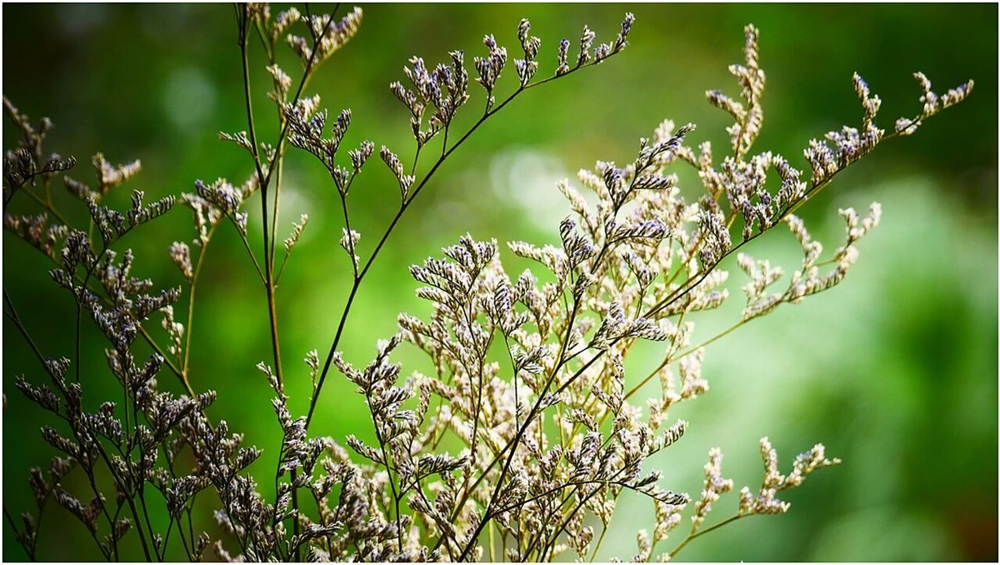

口コミ
こんなふうに思うかもしれない
お店の名前を知ったときの気持ちを、制作側が想像して書いたものです。
以下は制作側の創作のイメージ例で、実在のお客様の投稿ではありません。実際の口コミ・評価とは関係ありません。
お店の名前が気になって、いつかInstagramをのぞいてみたいと思いました。
営業時間などが分かったら、行ってみたいです。それまでは、Instagramの更新を楽しみにしています。
いつか行ってみたいお店です。まずはInstagramを見ながら、ゆっくり想像してみようと思います。
